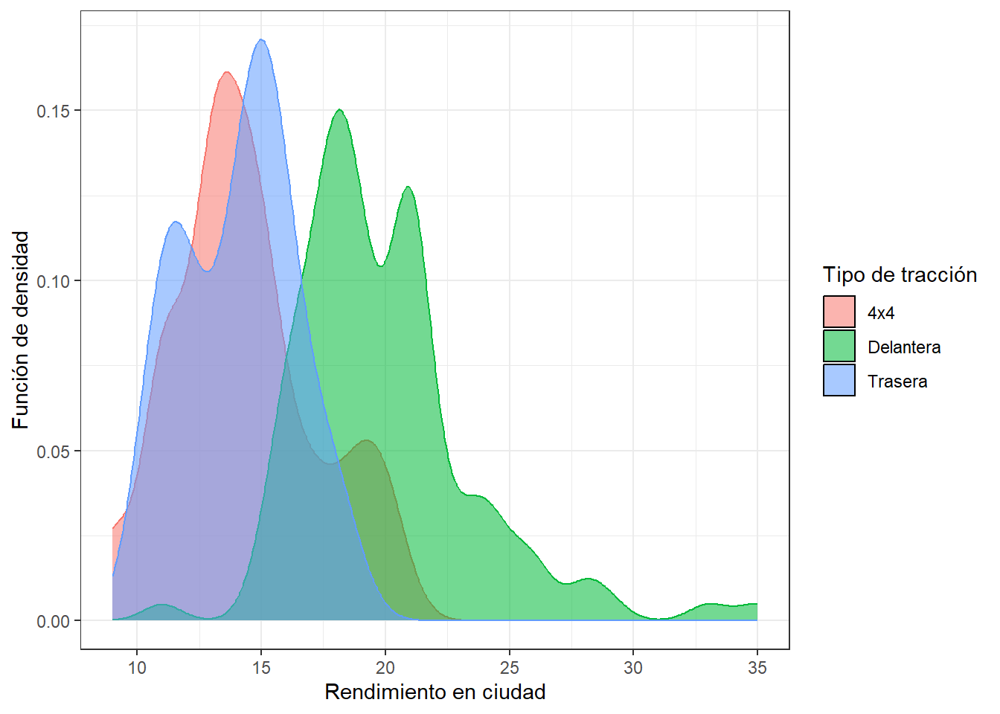

Entrega 2
Carga de librerías y de datos.
library(tidyverse)── Attaching core tidyverse packages ──────────────────────── tidyverse 2.0.0 ──
✔ dplyr 1.1.2 ✔ readr 2.1.4
✔ forcats 1.0.0 ✔ stringr 1.5.0
✔ ggplot2 3.4.3 ✔ tibble 3.2.1
✔ lubridate 1.9.2 ✔ tidyr 1.3.0
✔ purrr 1.0.1
── Conflicts ────────────────────────────────────────── tidyverse_conflicts() ──
✖ dplyr::filter() masks stats::filter()
✖ dplyr::lag() masks stats::lag()
ℹ Use the conflicted package (<http://conflicted.r-lib.org/>) to force all conflicts to become errorsmpg_backup=mpg
mpg %>% glimpseRows: 234
Columns: 11
$ manufacturer <chr> "audi", "audi", "audi", "audi", "audi", "audi", "audi", "…
$ model <chr> "a4", "a4", "a4", "a4", "a4", "a4", "a4", "a4 quattro", "…
$ displ <dbl> 1.8, 1.8, 2.0, 2.0, 2.8, 2.8, 3.1, 1.8, 1.8, 2.0, 2.0, 2.…
$ year <int> 1999, 1999, 2008, 2008, 1999, 1999, 2008, 1999, 1999, 200…
$ cyl <int> 4, 4, 4, 4, 6, 6, 6, 4, 4, 4, 4, 6, 6, 6, 6, 6, 6, 8, 8, …
$ trans <chr> "auto(l5)", "manual(m5)", "manual(m6)", "auto(av)", "auto…
$ drv <chr> "f", "f", "f", "f", "f", "f", "f", "4", "4", "4", "4", "4…
$ cty <int> 18, 21, 20, 21, 16, 18, 18, 18, 16, 20, 19, 15, 17, 17, 1…
$ hwy <int> 29, 29, 31, 30, 26, 26, 27, 26, 25, 28, 27, 25, 25, 25, 2…
$ fl <chr> "p", "p", "p", "p", "p", "p", "p", "p", "p", "p", "p", "p…
$ class <chr> "compact", "compact", "compact", "compact", "compact", "c…Pregunta 1
Dibujad un gráfico que permita visualizar el número de vehículos de cada fabricante del conjunto de datos.
mpg %>% select(c(manufacturer)) %>%
mutate(manufacturer=str_to_title(manufacturer)) %>%
ggplot(aes(x=manufacturer, fill=manufacturer))+
geom_bar()+
coord_flip()+
labs(x="Fabricante", y="Número de vehículos")+
theme_bw()+
theme(legend.position = "none")Pregunta 2
Dibujad un gráfico para mostrar el rendimiento medio en ciudad para cada clase.
En el siguiente gráfico hemos representado un boxplot para cada clase, y hemos añadido la media con una cruz.
mpg %>% select(c(cty,class)) %>%
mutate(class=str_to_title(class)) %>%
ggplot(aes(x=class, y=cty,fill=class)) +
geom_boxplot()+
stat_summary(fun.y=mean, geom="point", shape=3, size=3,show.legend = FALSE)+
labs(x="Clase", y="Rendimiento del motor en ciudad")+
theme_bw()+
theme(legend.position="none")Warning: The `fun.y` argument of `stat_summary()` is deprecated as of ggplot2 3.3.0.
ℹ Please use the `fun` argument instead.Pregunta 3
Construid un gráfico para mostrar el rendimiento medio en ciudad para cada clase y tipo de tracción simultáneamente.
Hemos utilizado un boxplot para cada clase y tipo de tracción, y los hemos agrupado por tipo de tracción. Además, el color también depende del tipo de tracción. Hemos representado las medias mediante círculos del mismo color que la tracción, que están dentro de cada caja.
mpg %>% select(c(cty,drv,class)) %>%
mutate(class=str_to_title(class)) %>%
ggplot(aes(x=class, y=cty, fill=drv)) +
geom_boxplot()+
stat_summary(fun.y=mean, geom="point", shape=21, size=2,show.legend = FALSE,position=position_dodge(0.75))+
labs(x="Clase", y="Rendimiento del motor en ciudad",fill="Tipo de tracción")+
scale_fill_discrete(labels=c("4x4","Delantera","Trasera"))+
theme_bw()Pregunta 4
Utilizad un gráfico para mostrar la relación entre tamaño del motor y el rendimiento en carretera, para cada clase de vehículo. ¿Qué podéis observar?
Queremos relacionar dos variables categóricas (tamaño del motor, es decir, número de cilindros; y clase de vehículo) con una cuantitativa (el rendimiento en carretera), así que estamos en la misma situación que en el apartado anterior. Podemos utilizar un gráfico similar.
mpg %>% select(c(cyl,hwy,class)) %>%
mutate_at(vars(cyl), factor) %>%
mutate(class=str_to_title(class)) %>%
ggplot(aes(x=class, y=hwy, fill=cyl)) +
geom_boxplot()+
stat_summary(fun.y=mean, geom="point", shape=21, size=2,show.legend = FALSE,position=position_dodge(0.75))+
labs(x="Clase", y="Rendimiento del motor en carretera", fill="Número de cilindros")+
theme_bw()Podemos observar que, en todas las clases de vehículos, el rendimiento baja con el número de cilindros, generalmente: las cajas aparecen “más abajo” mientras más cilindros tiene el motor.
Pregunta 5
Comparad la distribución del rendimiento en ciudad para distintos tipos de tracción.
mpg %>% select(cty,drv) %>%
ggplot(aes(x = cty, color=drv, fill = drv)) +
geom_density(alpha=0.55)+
labs(x="Rendimiento en ciudad",y="Función de densidad",fill="Tipo de tracción")+
guides(color="none")+ # si no se pone, muestra otra leyenda que no aporta informacion
scale_fill_discrete(labels=c("4x4","Delantera","Trasera"))+
theme_bw()
En los gráficos anteriores podemos observar que los coches con tracción delantera tienen por lo general un mayor rendimiento en ciudad que los coches con tracción trasera o tracción en cuatro ruedas, y no hay demasiada diferencia entre estos dos últimos.